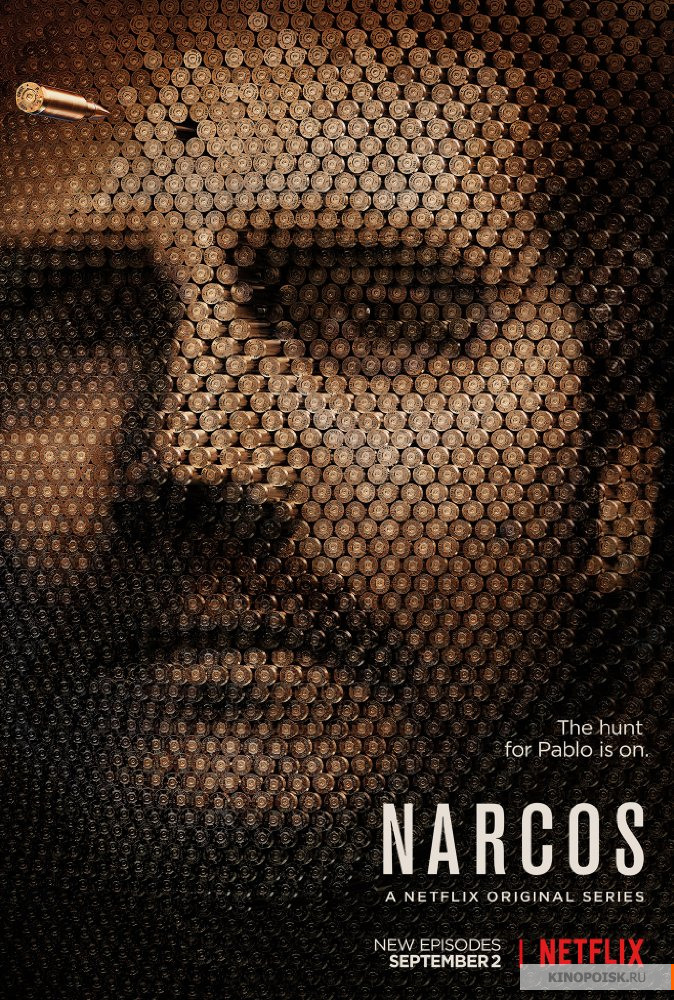

Страна садов
Когда неудовлетворенный жизнью телевизионный актер Эндрю Ларджман после десятилетнего отсутствия возвращается в свой родной город, чтобы присутствовать на похоронах матери, он встречается со страдающей эпилепсией девушкой по имени Сэм.
Она помогает Эндрю, долго употреблявшему антидепрессанты, избавиться от эмоциональных стрессов и начать новую жизнь. В результате Ларджман открывает для себя совершенно другой мир и переоценивает свое отношение ко многим вещам.
Но чтобы окончательно избавиться от прошлого, ему приходится пройти через противостояние с отцом-психологом и помочь Сэм справиться с ее собственными психологическими проблемами.
| Режиссер | Зак Брафф |
|---|---|
| Сценарист | Зак Брафф |
| Продюсер | Памела Эбди, Гарри Гилюберт, Дэн Халстед,... |
| Оператор | Лоуренс Шер |
| Жанр | драма, мелодрама, комедия |
| В главных ролях | Зак Брафф, Натали Портман, Питер Сарсгаард, Иэн Холм, Джим Парсонс, Кеннет Греймиз, Джордж С. Вольф, Остин Лайзи, Гари Гилберт, Джилл Флинт |
10
Клиника
Отучившись четыре года в медицинской школе, Джон Дориан приходит работать интерном в клинику. Вместе с ним здесь же будет применять полученные знания и его лучший друг со времен колледжа Крис Терк.
Не имеющие опыта практической работы, молодые специалисты сразу же погружаются в хаотический мир жизни больницы…
| Режиссер | Майкл Алан Спиллер, Билл Лоуренс, Адам Бернштейн, ... |
|---|---|
| Сценарист | Билл Лоуренс, Дэб Фордхэм, Дженей Баккен, ... |
| Продюсер | Памела Эбди, Гарри Гилюберт, Дэн Халстед,... |
| Оператор | Джон Инвуд, Эндрю Роусон, Дэйв Перкаль, ... |
| Жанр | драма, комедия |
| В главных ролях | Зак Брафф, Дональд Фэйсон, Сара Чок, Джон К. МакГинли, Нил Флинн, Джуди Рейес, Кен Дженкинс, Криста Миллер, Сэм Ллойд, Элизабет Бэнкс |
10

Господин Никто
Проснувшийся немощным стариком Немо Никто оказывается последним смертным в гротескном будущем.
Все люди уже давно бессмертны и с удовольствием наблюдают за телешоу, где главная звезда — дряхлый и безумный старик Немо, доживающий свои последние дни.
Накануне конца к нему приходит журналист, и Немо рассказывает ему свою историю перескакивая из одной жизни в другую, параллельную, несколько раз за рассказ успев умереть.
| Режиссер | Жако ван Дормель |
|---|---|
| Сценарист | Жако ван Дормель |
| Продюсер | Филипп Годо, Жан-Ив Асселин, Фабрис Дельвиль, ... |
| Оператор | Кристоф Бокарн |
| Жанр | фантастика, фэнтези, драма, мелодрама |
| В главных ролях | Джаред Лето, Сара Полли, Дайан Крюгер, Лин Дэн Пэм, Рис Иванс, Наташа Литтл, Тоби Регбо, Джуно Темпл, Клер Стоун, Томас Бирн |
9.7

13 причин почему
Однажды Клэй Дженсен находит на пороге своего дома коробку с аудиокассетами, записанными Ханной Бейкер.
Он был влюблен в эту девушку в школе, пока она однажды не покончила жизнь самоубийством.
В своих записях Ханна указала 13 причин, которые толкнули её на это. И Клэй — одна из них.
| Режиссер | Грегг Араки, Кайл Патрик Альварез, Карл Франклин, ... |
|---|---|
| Сценарист | Брайан Йоркей, Ник Шефф, Rohit Kumar, ... |
| Продюсер | Стив Голин, Кристель Лейблин, Том МакКарти, ... |
| Оператор | Айвен Страсберг, Камерон Дункан, Андрий Парекх |
| Жанр | драма, детектив |
| В главных ролях | Дилан Миннетт, Кэтрин Лэнгфорд, Кейт Уолш, Кристиан Наварро, Майлс Хейзер, Алиша Боэ, Брэндон Флинн, Дерек Люк, Джастин Прентис, Девин Друид |
9.5

Нарко
Хроника криминальной жизни колумбийского наркобарона Пабло Эскобара.
| Режиссер | Андрес Байс, Джозеф Владыка, Фернандо Коимбра, ... |
|---|---|
| Сценарист | Карло Бернард, Крис Бренкето, Даг Миро, ... |
| Продюсер | Кристоф Рианди, Джесси Роуз Мур, Эрик Ньюман, ... |
| Оператор | Адриан Тейдзидо, Маурисио Видаль, Кармен Кабана, ... |
| Жанр | криминал, драма |
| В главных ролях | Вагнер Моура, Бойд Холбрук, Педро Паскаль, Джоанна Кристи, Морис Комт, Альберто Амман, Паулина Гайтан, Хуан Мурсия, Хорхе Монтерроса, Дамиан Алькасар |
9.2

Очень странные дела
Действие сериала разворачивается в 80-х годах в тихом провинциальном городке.
Благоприятное течение местной жизни нарушает загадочное исчезновение подростка по имени Уилл.
Выяснить обстоятельства дела полны решимости родные мальчика и местный шериф. Также события затрагивают лучшего друга Уилла — Майка.
Он начинает собственное расследование. Майк уверен, что близок к разгадке, и теперь ему предстоит оказаться в эпицентре ожесточенной битвы потусторонних сил.
| Режиссер | Мэтт Даффер, Росс Даффер, Шон Леви, ... |
|---|---|
| Сценарист | Мэтт Даффер, Росс Даффер, Пол Дихтер, ... |
| Продюсер | Мэтт Даффер, Росс Даффер, Шон Леви, ... |
| Оператор | Тим Айвз, Тод Кэмпбелл, Дэвид Франко |
| Жанр | ужасы, фантастика, триллер, драма, детектив |
| В главных ролях | Вайнона Райдер, Дэвид Харбор, Финн Вулфард, Милли Бобби Браун, Гейтен Матараццо, Калеб МакЛафлин, Наталия Дайер, Чарли Хитон, Кара Буоно, Джо Кири |
9.5

Мистер Робот
История молодого программиста Эллиота, страдающего социофобией и решившего, что единственный приемлемый для него способ взаимодействия с людьми — это профессия хакера.
Таким образом, он быстро оказывается в том самом месте, где пересекаются интересы его работодателя — фирмы, занимающейся кибербезопасностью, — и подпольных организаций,
которые пытаются его завербовать с целью обрушения самых могучих американских корпораций.
| Режиссер | Сэм Эсмейл, Джим МакКэй, Триша Брок, ... |
|---|---|
| Сценарист | Сэм Эсмейл, Randolph Leon, Адам Пенн, ... |
| Продюсер | Сэм Эсмейл, Кайл Брэдстрит, Стив Голин, ... |
| Оператор | Тод Кэмпбелл, Тим Айвз |
| Жанр | триллер, драма, криминал |
| В главных ролях | Рами Малек, Карли Чаикин, Портия Даблдэй, Кристиан Слэйтер, Мартин Вальстрём, Майкл Кристофер, Грэйс Гаммер, Стефани Корнелиуссен, Б.Д. Вонг, Сунита Мани |
8.3

Конец этого гребанного мира
Джеймсу семнадцать и он уверен, что он — психопат. Алисе тоже семнадцать, она — капризная новенькая девчонка в школе.
Они с пол-оборота заводят подростковый роман, и Алиса уговаривает Джеймса начать поиски её отца. Джеймсу от Алисы тоже кое-что нужно.
| Режиссер | Джонатан Энтвистл, Люси Черняк |
|---|---|
| Сценарист | Чарли Ковелл, Чарльз С. Форсман |
| Продюсер | Энди Бэйкер, Доминик Бьюкэнэн, Джонатан Энтвистл, ... |
| Оператор | Джастин Браун, Ben Fordesman |
| Жанр | драма, комедия |
| В главных ролях | Джессика Барден, Алекс Лоутер, Стив Орам, Вунми Моссаку, Джемма Уилан, Кристин Боттомли, Навин Чоудхри, Джек Вил, Джонатан Арис, Бэрри Уорд |
7.6